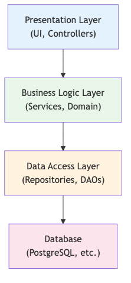
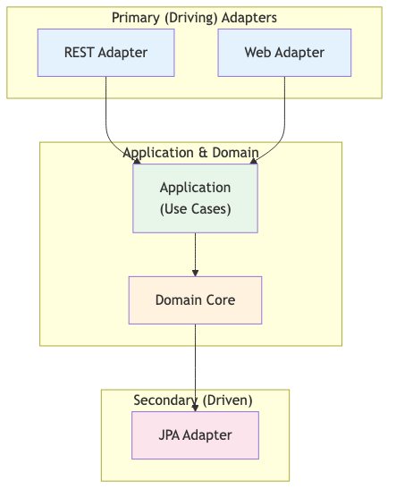
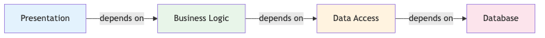
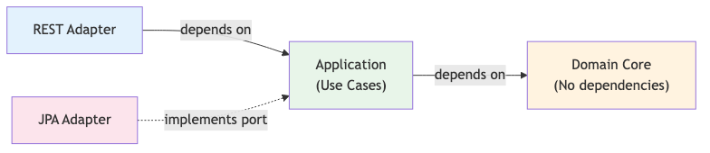
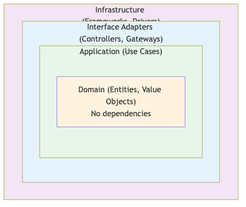

Course Content
All sections — click a title to expand.
⬡ Hexagonal Architecture — Introduction
History — Alistair Cockburn 2005
Hexagonal architecture, also known as Ports and Adapters, was introduced by Alistair Cockburn in 2005. It proposes placing the business domain at the center of the application and isolating all external communication behind interfaces called ports.
- Alias: Ports and Adapters Architecture
- Fundamental goal: allow an application to be equally driven by users, programs, automated tests, or batch scripts
- The hexagonal shape symbolises the ability to have multiple entry and exit points — no side is privileged
Problems Solved
- Infrastructure/domain coupling — the domain must never import JPA, Jakarta REST or Jakarta Messaging classes
- Difficult testability — with hexagonal, use cases are testable as pure POJOs, without a server
- Costly infrastructure changes — replacing JPA with MongoDB only touches secondary adapters
- Scattered business logic — centralised in the domain, no leakage into technical layers
Architecture Evolution
- Classic monolith — horizontal layers (UI → Service → DAO), downward dependencies, domain coupled to the database
- DDD — rich domain model, bounded contexts, but still a risk of infrastructure coupling if poorly applied
- Hexagonal Architecture — domain at the center, infrastructure at the periphery, ports as contracts, adapters as implementations

🔄 Dependency Inversion Principle
DIP — Depend on abstractions, not concretions
The Dependency Inversion Principle (DIP) is the technical foundation of hexagonal architecture. It states that high-level modules (domain, use cases) must never depend on low-level modules (JPA, REST). Both must depend on abstractions (interfaces).
- Rule 1 — High-level modules must not depend on low-level modules
- Rule 2 — Abstractions must not depend on details — details depend on abstractions
- In practice: the domain defines interfaces, the infrastructure implements them
The domain does not know the infrastructure
- No JPA annotations (
@Entity,@Column) in the domain - No import
jakarta.persistence.*in domain entities or services - No Jakarta REST annotations (
@Path,@GET) in the domain - The domain is an ordinary Java module — compilable without Jakarta EE dependencies
Interfaces in the domain, implementations in the infrastructure
- The interface
AccountPortlives incom.bank.domain— it is a secondary port - The class
JpaAccountAdapter implements AccountPortlives incom.bank.infrastructure - CDI injects the concrete implementation without the domain knowing it
Before / After DIP
- Before:
MoneyTransferServiceimports and instantiatesJpaAccountRepositorydirectly → tight coupling - After:
MoneyTransferServicedeclares a dependency onAccountPort(interface) → the implementation is injected by CDI
🏗️ Hexagonal Structure — Layers
Domain Layer — the immutable core
The Domain layer contains all the business logic. It is completely independent of any framework or technology.
- Entities — objects with business identity (
Account,Client) - Value Objects — immutable objects without identity (
Money,AccountId) - Domain services — business logic involving several entities
- Port interfaces — contracts that the infrastructure will implement
- No Jakarta EE annotation, no framework — pure Java
Application Layer — use case orchestration
- Contains the use cases of the application
- Orchestrates domain entities and calls to secondary ports
- Implements primary ports (use case interfaces)
- Examples:
MoneyTransferService,AccountQueryService
Infrastructure Layer — technical adapters
- REST Adapters — Jakarta REST resources that receive HTTP requests and call primary ports
- JPA Adapters — JPA implementations of secondary ports (repositories)
- Jakarta Messaging Adapters — Message-Driven Beans or Jakarta Messaging producers
- External API Adapters — HTTP clients (MicroProfile Rest Client) implementing secondary ports

🔌 Primary vs Secondary Ports
Primary Ports (Driving) — domain entry points
Primary ports are the interfaces the domain exposes to the outside. They represent the use cases the application offers. Primary adapters call them to trigger an action in the domain.
- Examples:
MoneyTransferUseCase,AccountQueryUseCase,CreateAccountUseCase - REST Controllers, Servlets and CLI are primary adapters that use these ports
- Flow direction: Adapter → Port → Domain
Secondary Ports (Driven) — domain exit points
Secondary ports are the interfaces the domain defines to access external resources (database, messaging, third-party APIs). The domain defines them, the infrastructure implements them.
- Examples:
AccountPort,TransactionPort,NotificationPort - JPA, Jakarta Messaging and HTTP Client adapters are secondary adapters that implement these ports
- Flow direction: Domain → Port → Adapter
Mnemonic Summary
- Primary = the outside world drives the application
- Secondary = the application drives the outside world

📦 Package Structure and Dependency Flow
Recommended package organisation
com.bank.domain.account— entities (Account,Transaction), value objects (Money,AccountId), port interfaces (AccountPort)com.bank.domain.transfer— transfer logic, primary port (MoneyTransferUseCase)com.bank.application— use cases / application services (MoneyTransferService)com.bank.infrastructure.persistence— JPA adapters (JpaAccountAdapter, JPA entities)com.bank.infrastructure.web— REST adapters (TransferRestAdapter)com.bank.infrastructure.messaging— Jakarta Messaging adapters
Dependency rules — the golden rule
- ✅
applicationmay import classes fromdomain - ✅
infrastructuremay import classes fromdomainandapplication - ❌
domainmust NEVER import classes frominfrastructure - ❌
domainmust NEVER import classes fromapplication - ❌ Never import
jakarta.persistence,jakarta.ws.rs,jakarta.jmsin thedomainpackage
Enforce the rule with ArchUnit
- The ArchUnit library allows testing architecture rules in JUnit
- A test
noClasses().that().resideInPackage("..domain..").should().dependOnClassesThat().resideInPackage("..infrastructure..")fails immediately if the rule is violated
⚙️ Implementing Ports and Adapters
Port = Java interface in the domain
A port is simply a Java interface declared in the domain package. It exclusively uses domain types — no JPA, Jakarta REST or JDBC types.
- Primary port — use case interface:
MoneyTransferUseCasewithtransferMoney(TransferCommand) - Secondary port — repository interface:
AccountPortwithfindById(AccountId),save(Account)
Adapter = implementation in the infrastructure
- Primary REST Adapter — Jakarta REST resource
TransferRestAdapterannotated@Path,@ApplicationScoped; injects the primary port and delegates - Secondary JPA Adapter — class
JpaAccountAdapter implements AccountPortannotated@ApplicationScoped; contains@PersistenceContext EntityManager; performs mapping between JPA entities and domain entities
Mapping between JPA entities and domain entities
- The JPA adapter uses separate JPA entities (
AccountJpaEntity) in the infrastructure package - No JPA annotation on domain entities — strict separation
- The mapping (JPA entity ↔ domain entity) is done in the adapter —
toDomain()/toJpa()methods


🧪 Testing Strategies
Domain testing — pure POJO, no framework
The domain layer is testable with simple JUnit 5 tests — no application server, no database, no Jakarta EE configuration required.
- Ultra-fast unit tests (milliseconds) — runnable at each compilation
- Business rules are tested directly on entities and value objects
- Example:
account.debitAccount(Money.of(100, "EUR"))→ verification of invariants
Use case testing — mock adapters
- Secondary ports are replaced by mock adapters (in-memory implementations)
- You can use Mockito or manually implement an
AccountPortMockwith aMap<AccountId, Account> - Application service tests run without Spring, without CDI, without JPA
- The complete behaviour of a use case is tested by strictly isolating dependencies
Adapter testing — targeted integration tests
- JPA Adapters — tested with H2 or Testcontainers (real PostgreSQL)
- REST Adapters — tested with Arquillian or REST-assured + Open Liberty embedded
- Integration tests are fewer but cover interface contracts
Benefits for maintainability
- Speed — domain unit tests run in < 1 second
- Isolation — each layer is tested independently
- Reliability — tests do not break when you change an adapter (e.g. JPA → MongoDB migration)
- Living documentation — domain tests document the business rules
🔄 DDD → Hexagonal Refactoring
Why refactor from DDD?
A well-designed DDD application is already halfway to hexagonal. The refactoring mainly consists of extracting interfaces and moving implementations into the infrastructure.
Refactoring steps
- Step 1 — Identify the domain: locate entities, value objects and services containing pure business logic
- Step 2 — Extract interfaces (ports): create
AccountPortfromJpaAccountRepository, createMoneyTransferUseCasefromMoneyTransferService - Step 3 — Move implementations:
JpaAccountRepositorybecomesJpaAccountAdapter implements AccountPortin the infrastructure package - Step 4 — Invert dependencies: remove all infrastructure imports from the domain, verify with ArchUnit
- Step 5 — Test: write domain unit tests and use case tests with mock adapters
Advantages vs DDD alone
- DDD — provides the rich domain model, ubiquitous language, bounded contexts
- Hexagonal — adds strict domain isolation, maximum testability, infrastructure flexibility
- Both complement each other: DDD models what to do, hexagonal organises how layers communicate
- Result: a domain tested as pure POJOs + replaceable adapters without touching the domain